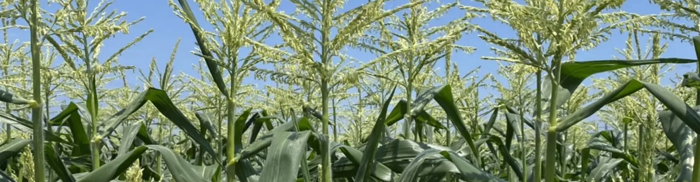
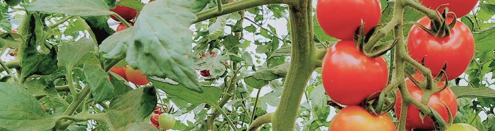
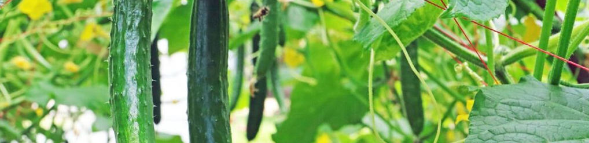

公開日：2026年7月 ｜ 最終更新：2026年7月
愛媛県東温市（旧重信町）で、農業「素人」（年金生活者）が、日々「雑草」との戦いに汗を流しながら「前畑」で野菜栽培を行っています。
日々の農作業のプロトコルを手軽に、スマホでも引き出せるように、一つのホームページにまとめました。



「土地管理」、「野菜の栽培」、「草刈り」など日々の農作業について
公開日：2026年7月 ｜ 最終更新：2026年7月
愛媛県東温市（旧重信町）で、農業「素人」（年金生活者）が、日々「雑草」との戦いに汗を流しながら「前畑」で野菜栽培を行っています。
日々の農作業のプロトコルを手軽に、スマホでも引き出せるように、一つのホームページにまとめました。